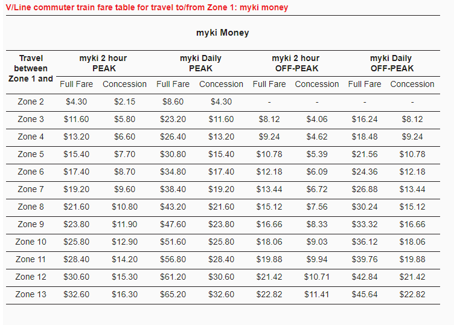
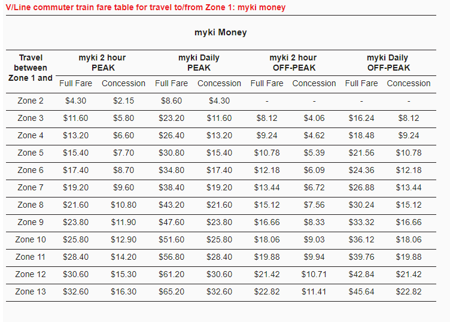

Further Research
Myki
Myki is one of the six public transport systems that you will encounter around Australia. It is exclusive to Victoria (VIC) and was developed by Keane Australia Micropayment Consortium, also known as Kamco. It took Myki ten years to be fully developed and has raked a total of 1.5 billion dollars over the ten year time frame. It currently costs six dollars to purchase a new card, half the price for concession, and provides no short-term options. Myki however is quite tourist friendly due to the function of ‘Reclaiming’ funds from within a card. Myki’s fare system is based on usage over the spam of 2 hours each, however after the second touch on, the third will be automatically a ‘daily’ touch on instead.


This means that the maximum cost for a user to pay per day, considering they’ve touched on more than three times, is 12.9$. Another key function to note that multiple users fail to notice is that Myki cards have an expiry date of four years from the day it is loaded with either money or a pass.
Myki’s was first announced at early 2007 however due to equipment complications, it was delayed for a year. During the year a total of 20,000 equipment was reported to be installed on various public transport vehicles. On the following year of 2008 Myki announced a full roll-out will begin at the end of the year, and will be fully operational by 2010. However due to late delivery, Transport Ticketing Authority or TTA halted payments towards Kamco. This hindered the progress of Myki’s implementation for a couple of months.
The first test Myki conducted was on the Geelong Bus Network late of 2007. The issues they encountered were due to the computer software found within the readers. The readers in the busses were unable to touch on and off properly. A fix was implanted quickly which led to a released report in May 2008 that announced a 90% passing grade.
On the front end, both users and staff members were able to;
- Touch on and off successfully
- Top up their Myki cards successfully
- Change shift selections for various public transport conductors successfully
- Establish a good GPS connection
On the back end, the staff members were able to;
- Establish and record a steady flow of Data; Transactions and Reports
- Successfully install various readers on multiple vehicles or locations
- Successfully train members for the development of the Myki System, which also involves communication between the various departments.
The second test Myki conducted were on August of 2008. They branched further towards train and tram networks around suburban areas;
Trains
- East Camberwell
- Canterbury
- Chatham
- Mont Albert
Tram – Route 86
On the 12th of December within the same year Myki was released to the general public. It was fully implemented on the bus routes in Geelong. On the following 2009 Myki was released on all bus routes within Geelong and Bellarine Peninsula. A month after the success Myki branched further towards; Ballarat, Bendigo, Seymour, and the Latrobe Valley towns of Moe, Morwell, Traralgon, and Warragul.
In May of 2009, Myki started installing readers in tram, and by June Myki started setting vending machines for users to top up their cards manually without the need of staff members. By late 2009 Myki was available on all train systems throughout Victoria. Installation was rushed due to the upcoming delivery date. The need for fast instalments led to multiple errors found within the Myki system. One main error that hindered users from touching on and off was due to the bad signal trams had upon traversing through the city. The high rise of buildings led to a loss in connection which meant that Myki card readers became unusable.
On the 25th of July 2010 Myki was finally available on all public transport systems. However shortly after their full implementation users commented on the design flaws Myki offered. One primary flaw that users hated was the time it took for the cards to be read while boarding on or off the vehicle. The touch on and off system was simply too slow which led to slower travel times, and delays in the time tabling system. Another complaint was the vending machines offered, the instructions were too confusing and was considered an overload for the users.
History of Problems with Myki
General Problems
- On the 29th of December 2009, a report consisting of 1600 users who received cards with their names printed as ‘Anonymous’
- Due to multiple delays Myki went through, the government had to prolong the usage of Metcard systems during the implementation stage of Myki. The final goal was to remove the need of Metcards.
- Local news agencies and corner shops refused to sell Myki’s due to the lower commissions they received.
- Information was leaked of the Myki system and its private database from a Transport Ticketing Authority (TTA) staff member.
- Potential for a higher travel costs due to users forgetting to ‘touch off’ which ends up in the payment of both Zone 1 and Zone 2.
- Myki vending machines would still print a receipt if the user pays via EFTPOS option regardless of a ‘yes’ or ‘no’ input. The receipt will still contain private information including: Full Name, Card Digits, Card Expiry Date
- Error within the data of Myki Bills. Roughly 33% of statements are showing wrong results. Either a duplication of charges, missing charges, or an error in the data input of charges.
- If your myki expires within the next year, you are no longer able to purchase any Passes, not even 7 day passes.
Potential Problems We Can Try Fix
- Due to the slow readers, touching on and off took longer. This led to a messier schedule involving delays of all transport vehicles, primarily trams and busses due to the need of time for passengers to swipe their Myki cards.
- Some cards were unable to be used, also known as ‘Faulty Cards’. The solution to this problem were short term tickets which users can swap over to while they wait for their current card to be replaced or fixed. However Myki offers no short-term cards or tickets. Users are forced to buy a new Myki card while they get their old card fixed.
- Online top-up feature takes on average a day for a successful transfer. At best 1-2 hours, at worst 24+ hours. The main reason was due to how credit cards function. Because the card requires it to be validated, when topping up face to face the card is presented on the spot which speeds up the validation process, however online the cards will take time to be processed through the bank for validation.
- If an auto online top-up payment fails, the Myki card is locked which forces users to send the card via mail to get it re-activated.
- If multiple cards are presented, for example a Myki card inside your wallet, there is a high chance for the reader to fail due to the detection of multiple cards.
- Touching on and off emits the same sound. To aid in users confirming whether they’ve touched on or off without the need of looking at the screen on the reader, we can change the sound of both touching on and off.
- Online top up archive needs to have a proper history if payment failed to go through. Currently if payment failed to be transferred to the Myki Card properly there will be no indication. Most users might think the money was stolen due to the lack of report.
- Myki’s 4 year expiry was never announced publicly and the majority of the users are not aware of this situation. Expiry dates should be printed on the card and shown on the screen when touching on or off, or topping up via a myki vending machine.
Trans Perth
Trans Perth started at early 2003, however as soon as testing was conducted issues rose quickly. One main issue that halted further implementation were the readers. Readers were unable to touch on and off properly. As soon as the bug was found, the release date was pushed back further to 2005 and ultimately made available to the public at 2007. Trans Perth did not have multiple problems on the record and mainly conducted one trial in May 2004. The trial started at Stirling Railway Station and was tested for roughly a month. They started with a small target of users, 2000, and steadily grew to 5000 by 2006.
Trans Perth offers multiple types of cards that caters to the various users and their needs. Each card also varied in stages and had different roll-out schedules.


During the roll out and testing phases Trans Perth had an ‘open’, ‘close’, or ‘controlled’ gate system which enforced users to swap over to the new system. An Open gate allowed users to freely pass through the station without the need of touching on, or off. Simply put it was free to travel. A closed gate meant that cards were required to pass through the station or get on the vehicle, this required users to have swapped over to the new system. The unique system was the ‘controlled’ gate which mixed both ‘open’ and ‘close’ gates. An example would be a bus which drops passengers in ‘paid’ areas or ‘closed’ stations. This forces the users to have a valid ticket to fully utilize the transport system.
There are two main functions which relates to ease of use. One was an AutoLoad system which allows users to automatically add funds into their card via a direct debit, or Bpay. Although Bpay will take longer, this will eliminate the need for users to top up using a vending machine or visit a staff member. The second is TravelEasy which was implemented late December 2006. TravelEasy gave users notifications in the form of emails about delays or changes on services during the day, week, or month.
One function that was never publically advertised was the records that Trans Perth kept of each user. The data each card recorded are;
- Distance travelled, this includes all touch on and off
- Top up and fare deductions
- Personal Information such as: User Name, Current Balance, Card Type
- Card Functions, whether it has an AutoLoad feature or not
Although Trans Perth did not have a lot of issues with readers and implementation during roll outs, it had one major flaw. Trans Perth RFID chips were hackable which was shown on February 2008. Hackers were able to get valuable information such as;
- Full Name
- Date of Birth
- Address
- Card Number
- Card Password
Pricing Comparison
For our initial testing phase, we will be focusing on Perth’s SmartRider card and Melbourne’s Myki card for rounded feedback from the best and worst received public transport models as voted by the public. For this reason, we will mainly focus on their pricing structure and changes that will be made to these systems exclusively.
Let’s begin with the card costs for each system. The price of the SmartRider card currently stands at $10 for a standard fare card and a concession card is sold at $5 whereas a Myki cards current cost for purchases is $6 for a full fare and a concession card is worth $3. We plan on having a unified price for the OMNIcard starting at $7 for a full fare card.
The travelling fares vary a lot and become difficult to compare due to the vast amount of differences that each system has, fortunately most have a daily maximum spend which is easy to compare. The SmartRider full fare prices alter depending on weather you have your card set up for the auto top-up feature (you receive a small discount with it active) although the daily cap is the same. For travelling one way on a standard fare the price can be anywhere from $3.84 and down to $4.32 per trip for travelling 2 zones (There are a total of 9 zones). The same trip as a concession would be $1.60 or $1.80. In Melbourne a similar trip would cost $4.30 for a one-way trip with the concession price being halved down to $2.15.
The daily maximum spend for the SmartRider is $12.80 for a full fare and $5.40 for a concession while the Myki system is capped at $8.60 for the full fare and $4.30 for concession travelling in the metropolitan areas. Regional services for Myki fall under a different pricing structure, for more below for further details.
As we plan on using the transport infrastructure that is currently being used in each state so the pricing scheme for the users will remain the same for travelling.
 
